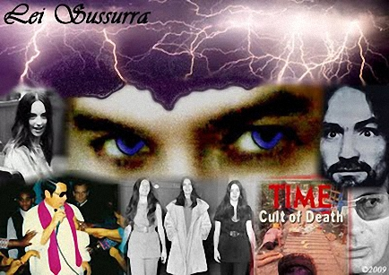

Karr Contemplates Creation of Cult
Karr as the charismatic leader of a sex cult surrounded by young female followers might seem far fetched but the FBI took it seriously. It might have been the oddest in a long line of investigations launched by the Federal Bureau of Investigation and the Department of Homeland Security over the months and years following his 2006 arrest for first degree murder. Karr's attorneys advised that federal authorities would watch him for the rest of his life.
INTERNATIONAL (Lei Sussurra) September 20, 2009 -- When Manson Family prosecutor Vincent Bugliosi discussed Karr on international television in 2006, it could not have been known that soon the FBI would compare Karr to Charles Manson, not as a killer but as a cult leader. Karr's high school Civics teacher would not have thought that someday Karr would be compared to a psychopathic Jim Jones by federal authorities when years before, a young Karr turned in a school term paper on the charismatic preacher who led over 900 of his followers to mass suicide.
Karr described the bizarre cult investigation, that took place approximately a year after his arrest in 2006, involved a computer that contained chat conversations between himself and one of his contacts. Karr explained that the FBI entered an American family's home and seized the computer in question. From the chat sessions, the FBI derived that Karr was contemplating the formation of a cult that would be comprised of young girls. Karr would not impart a complete description including the events that led up to the investigation, citing self-incrimination.
Karr is from a long line of religious leaders. His father was a missionary evangelist once launching a church in Caribbean Jamaica. Karr's mother, a teen missionary herself, was the daughter of an evangelical preacher who started his own church in Central America's Guatemala until he was chased out by the political unrest of the 1970's.
In the months and years following his arrest for the murder of JonBenet Ramsey, John Mark Karr was the subject of a number of federal investigations ranging from the serial murder of children to international child sex trafficking. In candid conversations, Karr reveals private talks with his attorneys that brought him to his knees as the result of a slue of investigations -- some that would have led to multiple extraditions to foreign lands with some offenses punishable by death.
Karr conveyed that, while he was still in Sonoma County Jail awaiting a child pornography trial, attorney Rob Amparan expressed to him that federal authorities would be watching him for the rest of his life. After his release and back in Atlanta, Karr stated that his attorneys gave him almost weekly accounts of new investigations being launched against him by federal authorities.
"My attorneys were in talks with DHS trying to get my laptop back for one. According to my attorney Gayle Gutekunst, the Department of Homeland Security was investigating me for everything imaginable. It was an emotionally traumatic experience as I received news of one investigation after another," stated Karr.
In one such investigation, Karr was looked at for international crimes against children by the Department of Homeland Security, possibly in conjunction with international authorities such as Interpol. The authorities attempted to trace the steps of Karr's vast international travels from 2001 to 2006. According to his attorneys, one of the investigations revolved around the serial murder of little girls in every country he had lived in or visited in the five years leading up to his arrest for first degree murder.
"I'm sure law enforcement got frustrated with all the gaps in my travels according to the visa stamps in my passport. While I was in Europe, for instance, I traveled from country to country without a visa stamp at all. In all the time I lived in Paris, there was not one visa stamp for France. They missed a lot," stated a seemingly sly Karr.
The idea of Karr as a serial child killer was likely revisited by law enforcement following a chilling message allegedly sent by Karr on Christmas night 2008 wherein he stated that he had killed little girls internationally.
Another of the investigations regarded what the Department of Homeland Security supposedly considered a child sex ring logically centered in Thailand. Karr's location at the time of his arrest in 2006 raised the eyebrows of authorities for its reputation as a center for the trafficking of children for sex. Authorities believed Karr was doing more than teaching second grade in the capitol city of Bangkok. DHS would reach yet another dead end and again, Karr would arise unscathed.
Obviously Karr was halted in his attempt to organize a cult comprised of young female followers or was he? Since there is no knowledge of his current whereabouts nor of the current goings on in his life, could it be that Karr is in some tropical utopia carrying out an old family tradition? Without a doubt, U.S. federal authorities and international law enforcement will certainly make it a point to find out.
Lei Sussurra
Copyright 2009
All Rights Reserved